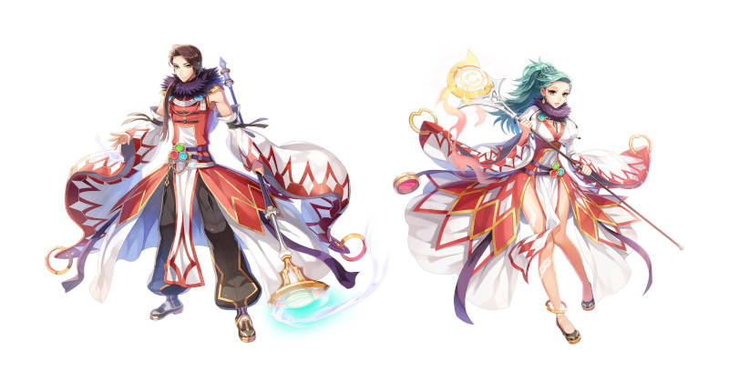

Sorcerer
O mago suporte front line

Quando o primeiro sábio conseguiu estabelecer um contrato com um Elemental do Fogo, ele se tornou o primeiro Feiticeiro, abrindo caminho para o surgimento de uma nova organização mágica.
Domine os quatro elementos básicos da natureza e desenvolva um novo tipo de feitiçaria.
Ultrapasse os limites do mundo à sua volta e use sua magia para distorcer e controlar o ambiente, transformando o terreno ou até o clima ao seu redor.
Aprenda novas formas de ataque, controlando poderosas energias místicas!
Voltar ao início
Builds Recomendadas
Full Suporte
Caster Full Damage
Defensive Land Protector